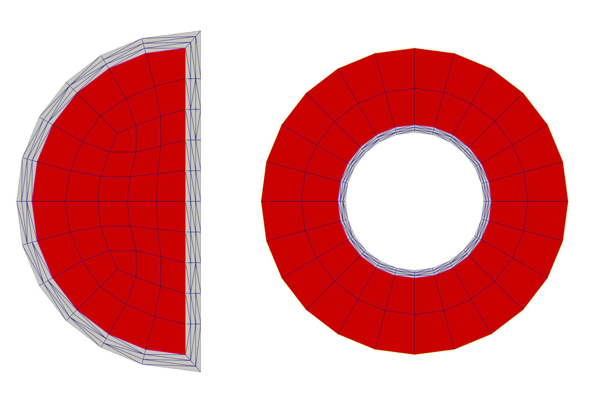

- inputThe input mesh based on which to create the conformal boundary layer.
C++ Type:MeshGeneratorName
Controllable:No
Description:The input mesh based on which to create the conformal boundary layer.
- thicknessThe total thickness of the boundary layer to be created.
C++ Type:Real
Unit:(no unit assumed)
Controllable:No
Description:The total thickness of the boundary layer to be created.
XYTriangleBoundaryLayerGenerator
Generate a 2D layered mesh that represents a conformal boundary layer along the boundary of an input 2D mesh or a 1D loop mesh.
Overview
The XYTriangleBoundaryLayerGenerator creates a layered 2D triangulated mesh based on a given surface of a 2D-XY mesh., utilizing the same method that was originally used by XYDelaunayGenerator.
Input Mesh
The surface can be either provided directly as a 1D mesh representing a closed curve in the XY plane or as a boundary of a given 2D-XY mesh. In both cases, the input mesh is given by "input". If the input mesh is a 1D mesh, it must only contain a closed curve in the XY plane. If the input mesh is a 2D-XY mesh, it is either a single connected mesh with only one outer boundary manifold, which can be automatically detected, or a mesh with a closed curve boundary that can be specified by "boundary_names".
Boundary Layer Specifications
The meshed boundary layer can be generated based on the provided closed curve in either outward or inward normal direction, as determined by the "boundary_layer_direction" parameter. The thickness of the boundary layer is specified by "thickness". The number of layers and the bias (i.e., element thickness growth factor) for the layer thickness can be specified by "num_layers" and "layer_bias", respectively.
The subdomain ID and name of the meshed boundary layer can be specified by "subdomain_id" and "subdomain_name", respectively. If not specified, a trivial subdomain ID of 0 is assigned without a subdomain name. Optionally, the boundary names of the both interface and surface boundary of the meshed boundary layer can be specified by "interface_name" and "surface_name", respectively. If not specified, these boundaries are not created.
If the input mesh is a 2D-XY mesh, it is also optional to keep the input mesh along with the meshed boundary layer by setting "keep_input" to true. In this case, the input mesh and the meshed boundary layer are stitched together to form a single mesh. If not specified, only the meshed boundary layer is generated.
This mesh generator supports both linear and quadratic elements through the "tri_elem_type" parameter. If not specified, linear elements (TRI3) are generated.
Implementation Details
This mesh generator uses a series of utility methods that enable the existing MOOSE mesh generators to achieve the meshing tasks.
The XYTriangleBoundaryLayerGenerator creates a layered 2D triangle mesh along the specified 1D surface of a 2D-XY mesh. It uses several meshing utility methods: - MooseMeshUtils::buildPolyLineMesh(), which is also used by the GapLineMeshGenerator , to generate the polyline mesh that defines the layer boundaries of the 2D triangulated mesh to be generated, which need to be parallel to the specified 1D surface of the input mesh. - MeshTriangulationUtils::triangulateWithDelaunay, which was refactored as a utility method from the original algorithm of XYDelaunayGenerator, to generate the 2D triangulated meshes of layers. The generation of each layer uses the two neighboring polyline meshes as the input boundary and hole meshes, respectively. - libMesh::UnstructuredMesh::stitch_meshes(), which is also used by the StitchMeshGenerator, to stitch the generated layered 2D triangulated mesh together as well as to stitch the layered 2D triangulated mesh with the input mesh if applicable.
Examples
Here, two examples of using this mesh generator are illustrated in Figure 1. The left example shows the outward boundary layer meshed by this generator based on the outer boundary of a 2D-XY half-circle mesh with its boundary detected automatically, and the right example shows the inward boundary layer meshed by this generator based on a 2D-XY ring mesh with its inner boundary specified.

Figure 1: Example of outward (left) and inward (right) boundary layer meshed by this generator. The red blocks are the input meshes, and the grey blocks are the meshed boundary layers.
Input Parameters
- boundary_layer_directionOUTWARDIn which direction the boundary layer is created with respect to the side normal of the elements along the boundary of the input mesh.
Default:OUTWARD
C++ Type:MooseEnum
Controllable:No
Description:In which direction the boundary layer is created with respect to the side normal of the elements along the boundary of the input mesh.
- boundary_namesThe names of the boundaries around which the boundary layer will be created.
C++ Type:std::vector<BoundaryName>
Controllable:No
Description:The names of the boundaries around which the boundary layer will be created.
- interface_nameThe optional boundary name to be assigned to the interface between the generated boundary layer and the input mesh.
C++ Type:BoundaryName
Controllable:No
Description:The optional boundary name to be assigned to the interface between the generated boundary layer and the input mesh.
- keep_inputFalseWhether to keep the input mesh in the final output. If false, only the boundary layers will be included in the output mesh.
Default:False
C++ Type:bool
Controllable:No
Description:Whether to keep the input mesh in the final output. If false, only the boundary layers will be included in the output mesh.
- layer_bias1The bias factor for the thickness of each layer of elements. A value > 1 leads to thicker layers away from the input mesh, while a value < 1 leads to thicker layers close to the input mesh. The default value of 1 leads to uniform layer thickness.
Default:1
C++ Type:Real
Unit:(no unit assumed)
Controllable:No
Description:The bias factor for the thickness of each layer of elements. A value > 1 leads to thicker layers away from the input mesh, while a value < 1 leads to thicker layers close to the input mesh. The default value of 1 leads to uniform layer thickness.
- num_layers1The total number of boundary layers to be created.
Default:1
C++ Type:unsigned int
Range:num_layers>0
Controllable:No
Description:The total number of boundary layers to be created.
- subdomain_idSubdomain id to set for the boundary layer mesh.
C++ Type:unsigned short
Controllable:No
Description:Subdomain id to set for the boundary layer mesh.
- subdomain_nameSubdomain name to set for the boundary layer mesh.
C++ Type:SubdomainName
Controllable:No
Description:Subdomain name to set for the boundary layer mesh.
- surface_nameThe optional boundary name to be assigned to the surface of the generated boundary layer.
C++ Type:BoundaryName
Controllable:No
Description:The optional boundary name to be assigned to the surface of the generated boundary layer.
- tri_elem_typeTRI3The type of triangular elements to use for the boundary layer.
Default:TRI3
C++ Type:MooseEnum
Controllable:No
Description:The type of triangular elements to use for the boundary layer.
Optional Parameters
- enableTrueSet the enabled status of the MooseObject.
Default:True
C++ Type:bool
Controllable:No
Description:Set the enabled status of the MooseObject.
- save_with_nameKeep the mesh from this mesh generator in memory with the name specified
C++ Type:std::string
Controllable:No
Description:Keep the mesh from this mesh generator in memory with the name specified
Advanced Parameters
- nemesisFalseWhether or not to output the mesh file in the nemesisformat (only if output = true)
Default:False
C++ Type:bool
Controllable:No
Description:Whether or not to output the mesh file in the nemesisformat (only if output = true)
- outputFalseWhether or not to output the mesh file after generating the mesh
Default:False
C++ Type:bool
Controllable:No
Description:Whether or not to output the mesh file after generating the mesh
- show_infoFalseWhether or not to show mesh info after generating the mesh (bounding box, element types, sidesets, nodesets, subdomains, etc)
Default:False
C++ Type:bool
Controllable:No
Description:Whether or not to show mesh info after generating the mesh (bounding box, element types, sidesets, nodesets, subdomains, etc)